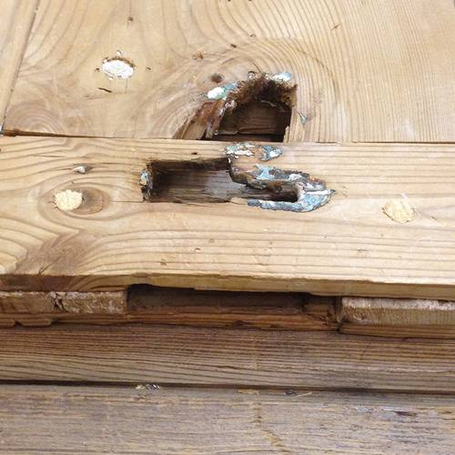
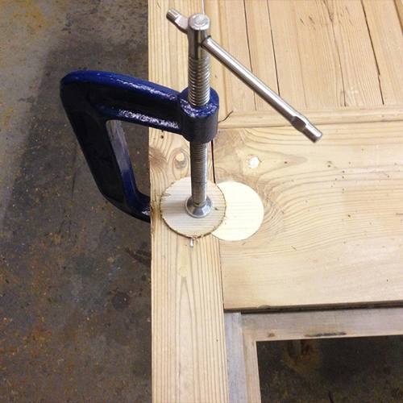
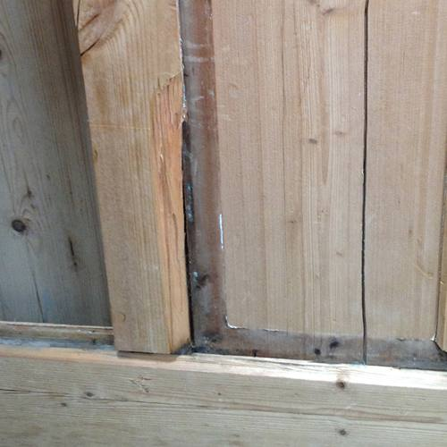
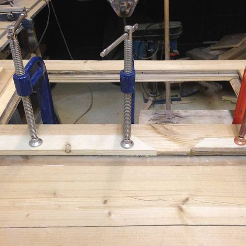
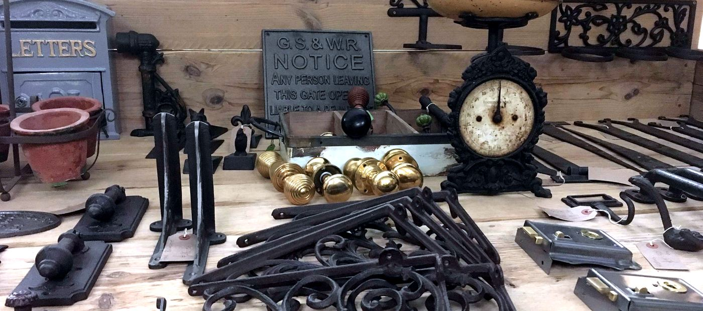

Finishing work & restoration
From small repairs to total restoration, sanding and polishing.
After stripping
Once your item has been paint stripped and is dry, it will usually need to be sanded to smooth down any rough areas and finished with your chosen finish. If you are unable to do this due to time constraints or lack of space, we would be more than happy to quote for this service.
An ever-increasing part of our business is the restoration and finishing work of doors and furniture, ranging from small repairs to total restoration, sanding and polishing.
Repairs in the workshop
Tap a photo to see it full size.

Damaged lock housingA stripped door rail with a damaged lock housing and old filler. 
PatchingTimber patches clamped into a door stile. 
Panel and frameA stripped door panel and frame in the workshop. 
Clamped repairClamps holding a new length of timber along a door rail.


What else do we do?
As well as paint stripping, we carry a good stock of original pine doors, available in various styles and sizes.
We also carry a stock of original rim locks and door handles, as well as a small range of fireplaces.

Ask for a quote
Tell us about your door or furniture and we will advise on stripping, repairs and finishing.